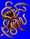
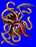
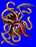
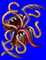

Height: Same height as target Weight: Same weight as target
Habitat: Cave, dungeon Origin: ???
Meaning: English word "mimcry"
A monster that takes the form of something attractive to adventurers, such as a treasure chest, and attacks them when they come close. It is possible, however, that a mimic might assume the form of a wall or door to catch people unaware. Being somewhat unintelligent, there is usually no malice in its attacks, but its appetite is insatiable, meaning it will eat anything that comes close to it without pause. In RPGs, it usually attacks the party by surprise.